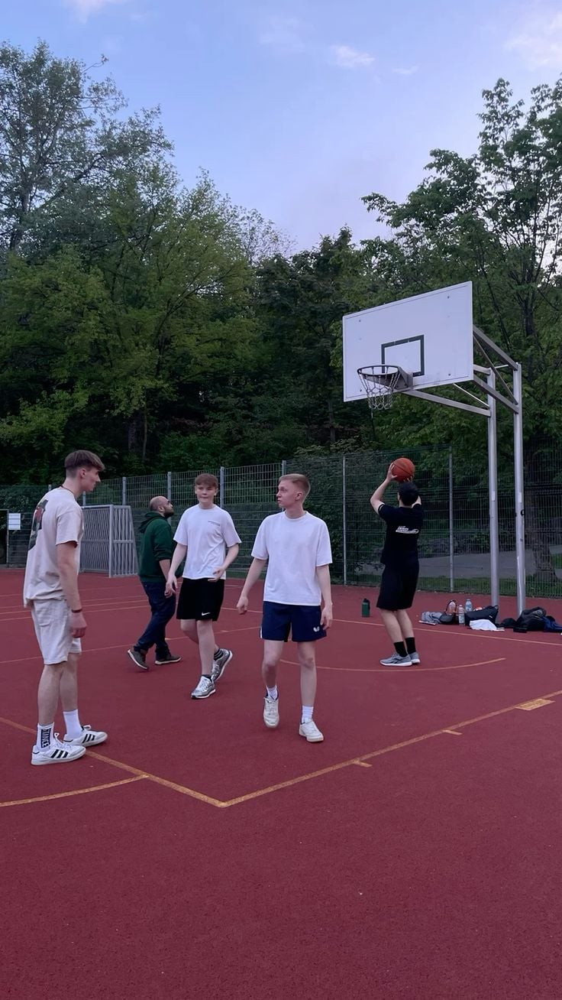

Sports and Fitness: Why Staying Active Matters
Introduction
These days, sports and fitness are a massive part of our lives. Honestly, most of us spend way too many hours sitting at school desks or just scrolling on our phones, so actually getting up and moving is super important for both our bodies and our minds. Working out is probably the best way to deal with school and exam stress because it clears your head after long classes, gives you way more energy, helps you sleep better, and builds real confidence.

Team Sports and Fitness Trends
For teenagers, team sports like basketball, football, and rugby are always popular since they teach you how to work together, communicate, and handle pressure as a group. At the same time, going to the gym, lifting weights, or just running has become a huge trend because people want to push themselves, get in better shape, and feel stronger.
The Gym vs. Outdoor Sports
When you compare the gym to outdoor sports, both have their own perks depending on your vibe. At the gym, you have a set routine, you can track your progress every week, and you can focus on your own goals even if the weather outside is terrible. Outdoor sports, though, give you fresh air, more freedom, and a chance to just hang out with friends so it barely even feels like exercise. Staying active also keeps you away from bad habits and forces you to manage your time better.

Conclusion
Whether you are lifting weights, playing for a local team, or just going for a jog after school, finding something you actually like doing is the easiest way to stay healthy and build habits that will stick with you forever.